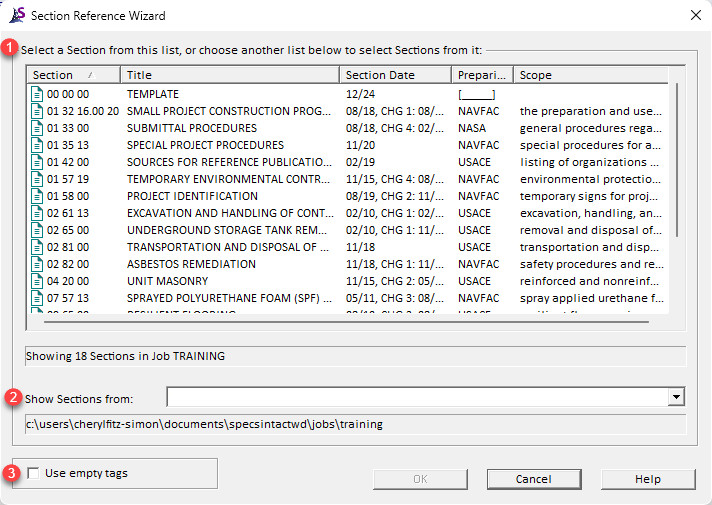
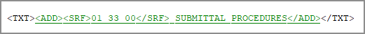

This command can be executed from the SI Editor's Tagsbar.
The Section Reference Wizard streamlines the process of Section management by enabling cross-referencing between Sections, aiding in quality assurance and quality control of critical project elements by automating the Section and Section References insertion, using the SRF tags to identify and standardize Section Numbers and Titles. This automated tool eliminates manual entry to improve the accuracy of the Section Verification Report.
 The Section Reference Wizard is activated by positioning the cursor within the Section text and clicking the SRF button on the Tagsbar.
The Section Reference Wizard is activated by positioning the cursor within the Section text and clicking the SRF button on the Tagsbar.
 While not recommended, you can disable the Section Reference Wizard by navigating to the Tools menu > Options > Edit and unchecking Use Submittal and Section Reference Wizards.
While not recommended, you can disable the Section Reference Wizard by navigating to the Tools menu > Options > Edit and unchecking Use Submittal and Section Reference Wizards.
When the Section Reference Wizard opens, it will initially display Sections within the selected Job. If the required Section is located in a connected Master, the software will provide an option to incorporate the Section into the selected Job.

 A Section Reference inserted with the Section Reference Wizard, with tags visible.
A Section Reference inserted with the Section Reference Wizard, with tags visible.

 The OK button will execute and save the selections made.
The OK button will execute and save the selections made.
 The Cancel button will close the window without recording any selections or changes entered.
The Cancel button will close the window without recording any selections or changes entered.
 The Help button will open the Help Topic for this window.
The Help button will open the Help Topic for this window.
Users are encouraged to visit the SpecsIntact Website's Support & Help Center for access to all of our User Tools, including Web-Based Help (containing Troubleshooting, Frequently Asked Questions (FAQs), Technical Notes, and Known Problems), eLearning Modules (video tutorials), and printable Guides.
| CONTACT US: | ||
| 256.895.5505 | ||
| SpecsIntact@usace.army.mil | ||
| SpecsIntact.wbdg.org | ||